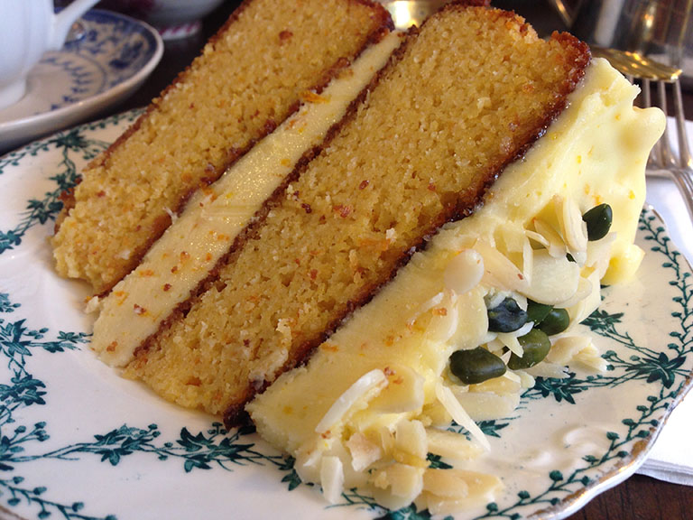

Carousel Test Document
Carousel 1: Arrow nav
-

- 
Carousel 2: Thumbs
A class of carousel is automatically added to the thumbs element
Carousel 3: Zoomable
This slider zooms when clicked on.
Carousel 4: Thumbnail options
This Carousel has smaller thumbnails, the thumbnail animation speed is also increased. The thumbnails are in a carousel and options may be set using the thumbConfig setting.
Carousel 5: One Image only thumbnail setting enabled
Thumbnails don't display even if they are enabled when there is only one image in the gallery
Carousel 6: Dots
Dots can be used as navigation.
Carousel 7: Custom transitions
Carousel 8: Zoom without closing
Zooming can happen without hiding the carousel or the thumbs using 'hideCarouselOnZoom: false' and 'hideThumbsOnZoom: false' respectively.
Carousel 9: Automatic Sliding
Carousel 10: Zoom hiding page
Zooming can happen without hiding the carousel or the thumbs using 'hideCarouselOnZoom: false' and 'hideThumbsOnZoom: false' respectively.
Resources
Available on Github. Plugin by Mothership.